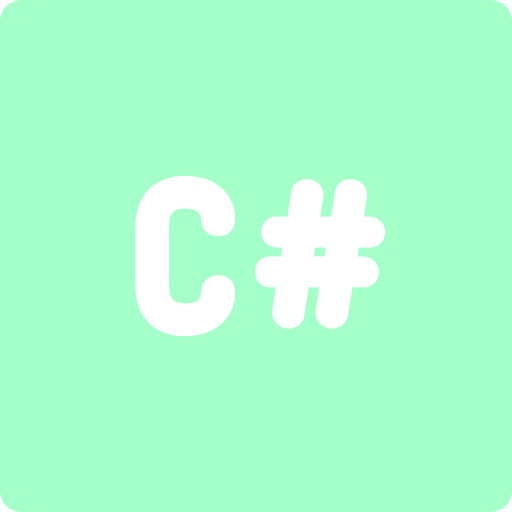

Compétences
Langages




Environnement de développement


Versionning

21 ans - en 2ème année de BTS SIO option slam
Bac Pro SN RISC
Je poursuis mes études par une année en alternance de Concepteur Développeur d'Application à l'école IPI de Lyon
Je vais être en contrat d'apprentissage avec la société TDI située à Bron
jeux de société, jeux vidéo, films séries, musculation, tennis, randonnée, patisserie
SCIC
Entreprise du Service Numérique de 6 salariés
Service de Développement pour des coopératives d'entrepreneurs
Structure composée de salariés et de permanents, qui assure le suivi des entrepreneurs
Cela permet aux entrepreneurs de ne pas avoir tout à gerer et de bénéficier d'aide d'autres coopératives
Progiciel, site web pour les clients

Casse Automobile Familiale depuis 1962
200 employés
Usine et Batiment Administratif
GPA est une entreprise qui vend des pièces détachées à tout particulier et entreprise
GPA démonte des voitures qui ont été achetées après un accident ou directement auprès d'un particulier
GPA vend les pièces sur des places de marchés, sur le site www.gpa26.com et sur des plateformes d'intermédiaires
Les pièces sont stockées dans l'usine, repertoriées entre petites et grandes pièces
chaque pièces et voitures sont identifié par un qrcode pour localiser le produit
Les clients du magasin Gedima participent à un jeu de la meilleur réalisation
Les clients font leur réalisation et postent sur le site internet de Gedima leur réalisation
Ils vont pouvoir voter pour 3 réalisations et leur attribuer un score
Application de vote sur appli mobile sur tablette au magasin
Un classement sera ensuite publié sur internet


jQuery, WinDev Mobile, Python, C
Dev Jeux Vidéos , Godot
Journaux Numériques, Feedly, Flux RSS, CodinGame
Cours en ligne sur openclassroom, vidéos youtube
Projets en cours de formation + Projets en millieu professionel
oui des exercices sur internet peuvent permettre de s'entrainer sur des langages déjà connu et d'apprendre des nouveaux principes dessus
Tout au long de mes stages j'avais besoin d'aller chercher des documentations, des réponses sur internet pour pouvoir mettre en place mes solutions
06 98 78 25 93
vandenbergthomas@hotmail.fr